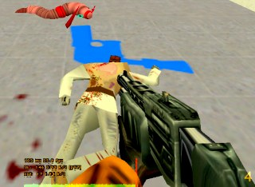

...and
other
Half-Life
servers
Plans Maps
Forums
| 26 May 2001: Check out our new servers page! |
 |
8/20/2000 I have dedicated Severian's Half-Life Servers to GirlyGirl, a regular in the Torture Chamber, who died in an automobile accident this weekend. She was only 25. We will miss her smiling face, sweet talk and killing personality. Please don't be offended by the picture to the right. GirlyGirl would certainly approve! Please visit the GirlyGirl tribute site set up by [TGP]WildWizard & Mrs_Wiz. |
 |
Half-Life is a fun, addicting, violent PC game. In a virtual world, you do your best to kill other people without being killed yourself. To learn more about Half-Life, visit the Official Half-Life site. Someday maybe I'll put up a bunch of links to Half-Life resources, but you can find 'em yourself with Google.
I play Half-Life, on our servers and others, as Severian. My wife usually plays as S or dawn, my daughters as Shortone (age 12) and Ladybug (14), and my younger son (10) as SeveriansSon. My older son (17) doesn't play Half-Life and thinks we're a bunch of nuts. I've posted some pictures of our non-clannish clan. We like to use various models that we have downloaded from Wonswap and Cold Fusion. {DP}Bryan - Mountain Dew Patrol, a regular in the Chamber, has made dozens of skins that we love to wear.
Three other staff members at Cerious Software also play half-life, usually as Whurlwind, Kill_Fodder and b-nutz.
I've modified the Torture Chamber server a bit; I hope you like my changes! They are not a full "mod," as they don't require you to load a custom game. All the change is on the server, so normal Half-Life client programs can play. My special mods are:
- Identification of other players when aiming at them (name and model).
- Map information, remaining time, and frag limit displayed when you die.
- Gluon guns don't aim properly and leak radiation (killing those who use them, eventually).
- Full clip (50) on machine gun acquisition.
- Faster shotgun reload and pump time.
- Faster crossbow reload.
- Really bright flashlight (you glow intensely). Cool to die with it on!
- Ability to control the weapons & ammo that players spawn with.
- Invulnerability for one second after spawn (you don't take damage).
- Alternate mode for tripmine: places a "lightning" mine which does 150% damage.
- Alternate fire for grenades: throws them like MP5 grenades (limited to once every 5 seconds.)
- Alternate fire for snarks: teleports you to a random spawn location (limited to once every 5 minutes.)
- Alternate fire for the crowbar: sends a taunt to all players.
- Snarks use the "chumtoad" model, and really scream. (Thanks, Kill_Fodder!)
Severian's Torture Chamber runs about 20-50 maps, which I change and shuffle fairly regularly based on feedback from others while playing, and on our personal preferences. If you have an opinion on any map, have requests for specific maps, or are interested in our server-side mods, please contact me at torturer@severian.org.
The current map list is available, along with a ZIP of all current maps, here.